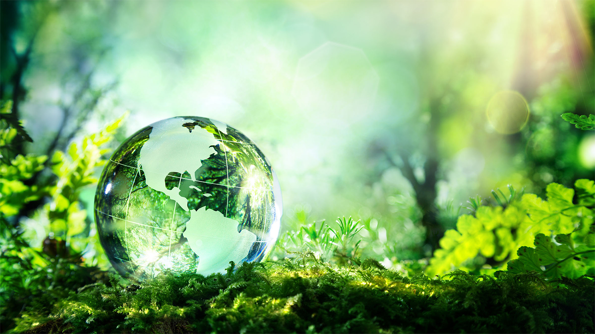

Welcome to our dedicated space for Sustainable Agriculture and Water Conservation! In a world where environmental concerns are becoming increasingly critical, our site is committed to promoting practices that ensure the longevity of our planet. Through the lens of sustainable agriculture and water conservation, we explore innovative approaches, share valuable insights, and champion eco-friendly solutions.Discover how sustainable agriculture methods are reshaping the future of farming, emphasizing harmony with nature, reducing environmental impact, and fostering resilient ecosystems. Join us on a journey to explore techniques that not only ensure bountiful harvests but also safeguard the health of our planet. Dive into the realm of water conservation, where we delve into the importance of responsible water usage. Learn about cutting-edge technologies, conservation strategies, and practical tips for preserving this precious resource. Our aim is to empower individuals and communities to make informed choices that contribute to a sustainable and water-efficient world.
Sustainable Agriculture
Water Conservation
Global Warming
